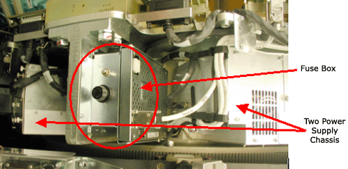
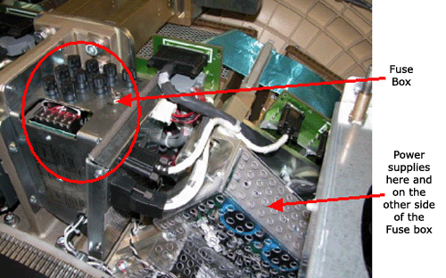

Operating Documentation
Direction 5193755-800, Rev# 8
BrightSpeed (Ltd. Access) Service Methods - Adv
Operating Documentation |
There are two potential DAS configurations for this system. Refer to the pictures below to identify the version you have. If there are service procedures for both DAS versions, then use the one that applies to your system. The primary difference is the power supplies, the mounting of the DAS chassis, and the cabling. The DAS chassis’s, converter cards, and DCB are the same for both the versions.
The DAS type can be identified on the Common Service desktop Home page. Look on the left column under Data Acquisition System and you will see the DAS type currently configured for your system. Example entries are MDAS, MDAS_H16_16, GDAS_H16_16 and others. The first part identifies the system as either having an MDAS or GDAS. This is manually configured during software load.
Note that (in Illustration 1) the small fuse block with a single fuse holder and the supplies to the sides are contained within the chassis’ instead of being separately mounted.
Illustration 1: GDAS-16 Fuse block and power supplies

Note the fuse block with many fuses and the individually mounted power supplies shown in Illustration 2.
Illustration 2: MDAS Fuse block and power supplies
